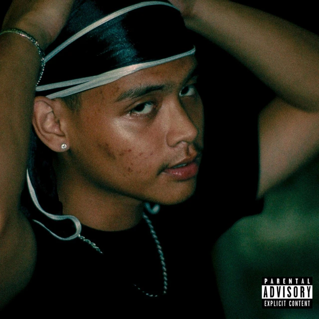
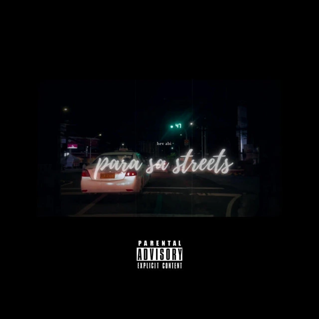
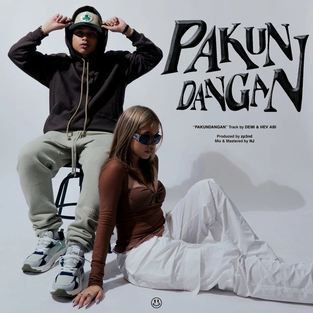
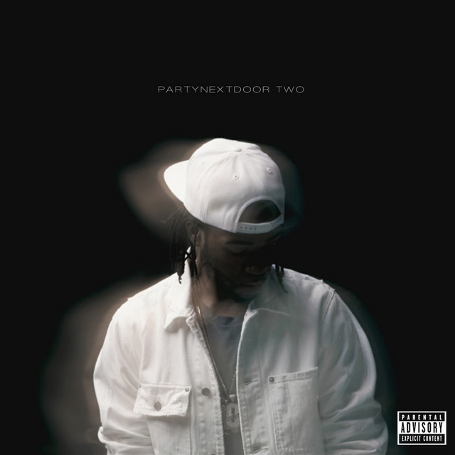
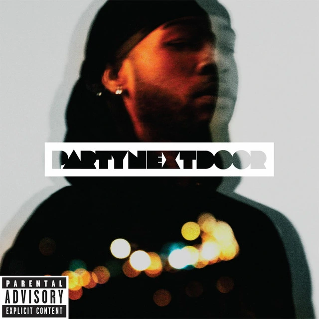
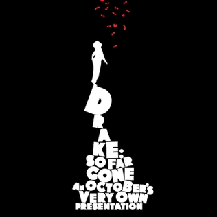
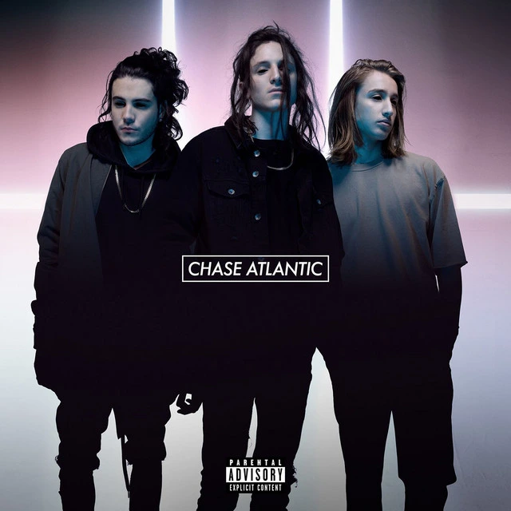
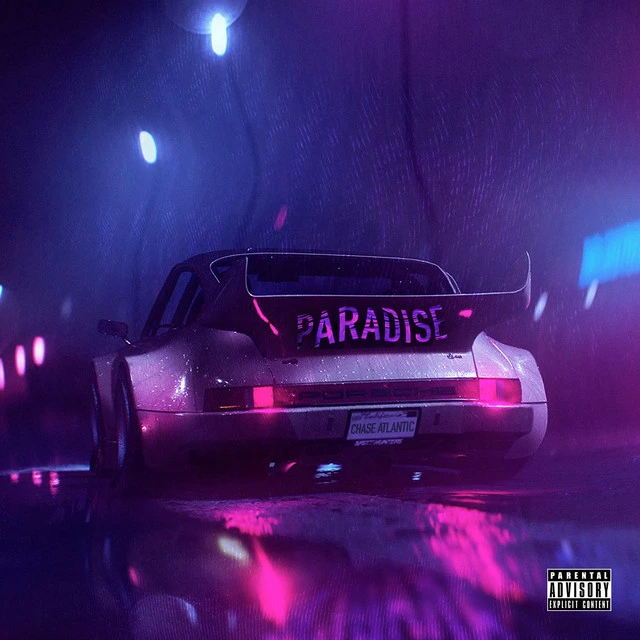

Now spinning — personal selection
Discover my playlist!
Step into the songs, artists, and sounds that stay in my rotation and shape the mood of my everyday life.
Now spinning — personal selection
Step into the songs, artists, and sounds that stay in my rotation and shape the mood of my everyday life.
01 — playlist collection
Filipino Rap is my top favorite when it comes to expressing myself rather lively. I was not a fan of filipino rap back then but when I started trying listening to it I can't stop ever since.

Hev Abi

Hev Abi
HELLMERRY

CK YG, HELLMERRY

DEMI, Hev Abi

NATEMAN
01 / 06 — Track title 01
02 — playlist collection
R&B is one of my favorite music genres because it brings a chill and hype vibes at the same time. I listen to r&b every once in a while whether I'm doing my homeworks, going somewhere, or just to chill in my room.

Partynextdoor
Chris Brown

Chris Brown, Tyga, Fat Trel

Partynextdoor

Drake

Drake
01 / 06 — Track title 01
03 — playlist collection
Chase Atlantic is one of my favorite music artists because of their unique sound and atmospheric style. I enjoy how they blend R&B, pop, and alternative elements to create music that feels both relaxing and emotional.

Chase Atlantic
Chase Atlantic

Chase Atlantic

Chase Atlantic

Chase Atlantic

Chase Atlantic
01 / 06 — Track title 01
End of the rotation
Head back to the About Me page and continue discovering the interests, skills, and ideas behind my work.
Return to About Me